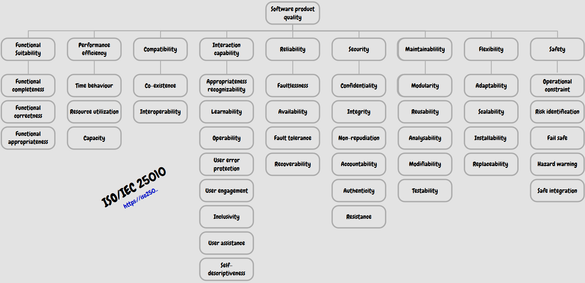
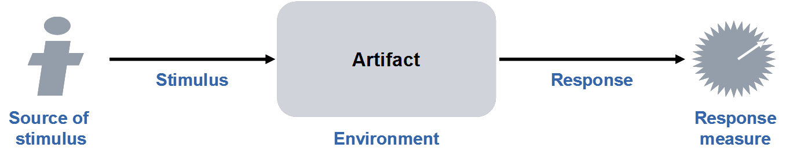

Classification of NFRs
Non-functional requirements (NFRs) define "how well" the system works. They have a key influence on the structure and are referred to as architectural drivers. Several standardized taxonomies exist for working with NFRs systematically.
#FURPS+
A classic classification model created by HP:
- Functional (Security functions, reporting, etc. are listed here)
- Usability (UI, UX, documentation)
- Reliability (availability, fault tolerance, recovery)
- Performance (latency, throughput, resource utilization)
- Supportability (testability, extensibility, localization)
- + (Plus) = Denotes so-called Constraints — design constraints, implementation rules, licensing legislation, and physical limitations.
Here is a concrete example of how requirements for a typical online shop would be classified using the FURPS+ model:
- F (Functionality - Functional): The system must allow the customer to pay securely by card and then send them an invoice in PDF.
- U (Usability): The user interface must be designed so that the purchasing process takes no more than 3 clicks, and it must include interactive help.
- R (Reliability): The online shop must have guaranteed availability of 99.9% and, in the event of a server failure, must be able to recover automatically without losing orders in progress.
- P (Performance): The response time for full-text searches in the catalog must not exceed 2 seconds, even under a load of 10,000 users shopping simultaneously.
- S (Supportability): The architecture must be easily testable, must allow new payment methods to be added quickly, and must be technically prepared for localization into additional languages.
- + (Constraints): The entire solution must physically run on AWS cloud infrastructure, must be written in Java, and must strictly comply with the legislative constraints of the GDPR for personal data protection.
#ISO/IEC 25010 (Successor to ISO 9126)
The ISO/IEC 25010 standard is part of the broader family of standards known as SQuaRE (System and Software Quality Requirements and Evaluation), which is based on the earlier ISO/IEC 9126 and 14598 standards. The main goal of this portal and of the standards family itself is to provide a comprehensive framework that guides software development through a clear specification of quality requirements and subsequent evaluation of these characteristics.
The ISO 25000 family of standards defines product quality in great detail, dividing it into nine main categories, each with its own specific subcategories for precise analysis:
- Functional Suitability: Includes functional completeness, correctness, and appropriateness.
- Performance Efficiency: Evaluates time behaviour, resource utilization, and system capacity.
- Compatibility: Examines the ability to coexist with other software and overall interoperability.
- Interaction Capability (formerly Usability): A very extensive category addressing appropriateness recognizability, learnability, operability, user error protection, user engagement, inclusivity, user assistance, and self-descriptiveness.
- Reliability: Monitors faultlessness, availability, fault tolerance, and recoverability.
- Security (Data security): Covers confidentiality, integrity, non-repudiation, accountability, authenticity, and overall resistance.
- Maintainability: Includes modularity, reusability, analyzability, modifiability, and testability.
- Flexibility (formerly Portability): Defines the adaptability, scalability, installability, and replaceability of software.
- Safety (Safety for the surroundings and risks): Addresses operational constraints, risk identification, fail-safe behavior, hazard warnings, and safe integration.
This extensive framework serves software architects as a perfect "checklist" that helps ensure no detail is overlooked when designing and testing quality.

ODR classification (Operational vs. Developmental Requirements):
- Operational ("Outer qualities"): Properties visible to the user or operator at runtime. This includes Usability, Performance, Security, Reliability.
- Developmental ("Inner qualities"): Properties of the internal code, critical for the development team and the SWA. This includes Maintainability, Portability, Reusability, Testability. The SWA is precisely the primary advocate and stakeholder for these developmental properties, because the business stakeholder (Business) mostly ignores them until a problem arises.
#Internal vs. External qualities
- External (Operational): Matters to the user (Performance, Security, Usability).
- Internal (Developmental): Matters to the team and development. This includes Maintainability, Extensibility, Testability. The software architect is the primary advocate and representative (Stakeholder) for exactly these internal developmental qualities.
#Quality Attribute Workshops (QAWs) and Scenarios
Because stakeholders cannot specify NFRs precisely, the SWA must use workshops and the 5 Whys method to uncover the actual needs. The 5 Whys method is an analytical technique that the software architect uses during Quality Attribute Workshops (QAWs) to uncover the true root cause of a non-functional requirement. Customers often cannot specify quality attributes precisely, or they dictate a specific technical solution instead of describing their problem.
The architect's goal is to ask "Why?" iteratively until they reach the very core of the problem. The sources provide this practical example:
- Customer: "We want to speed up the database." (Vague requirement / premature solution proposal)
- Architect (1st why?): "Why do you need to speed it up?" ➔ Customer: "Because searching takes 10 seconds."
- Architect (2nd why?): "Why does it take so long?" ➔ Customer: "Because we perform full-text searches on an ordinary relational table."
- Result: The architect discovers that the actual need is not to buy a faster and more expensive relational database (such as Oracle), but to deploy a specialized tool for full-text searching, such as ElasticSearch.
Once the architect has uncovered this actual business need using 5 Whys, they must not leave it in a vague state but must formalize it into a precisely measurable and testable Quality Attribute Scenario.
Once an NFR is identified, the architect must not leave it in a vague state (e.g., "The system must be secure"). It must be formalized into a measurable Quality Attribute Scenario consisting of 6 parts:
- Source: Who/what triggered the stimulus? (e.g., A hacker from the external network).
- Stimulus: What exactly is happening? (e.g., Conducting a DDoS attack of 10 Gbps).
- Artifact: Which part of the system does this concern? (e.g., The web application firewall).
- Environment: Under what circumstances? (e.g., During the peak seasonal traffic period).
- Response: What should the system do? (e.g., Detect the anomaly, block the source IP addresses, and continue serving legitimate clients).
- Measure: How will we objectively measure it? (e.g., Response must not exceed 2 seconds and the success rate for blocking attack packets must be at least 99.9%).

Based on a scenario described this precisely, the architect then selects specific Design Tactics (e.g., using the Active Redundancy tactic to achieve fault tolerance).